OptiMed - What Medicine Best Suits Your Need?
Motivation and summary of the project
I had this idea about building an application that can diagnose your causes of discomfort and pain and suggest you the drugs that fit that description! I spent some time and looked at the different data sources that I knew such as Data is beautiful, data.world, Data is plural, kaggle, UCI datasets and so on and found a Drug Review Dataset (Drugs.com) about cutomer reviews of 3671 unique drugs.
I thought there are probably many people like me neither know nor look for the drug that best fits their symptoms and just go with that one drug that they always relied on when they had a headache ... So I thought about different ways that this data set can be used to
- Drug recommender: find the best hit from the data set using:
- the patient symptoms
- the patient location (living close to CVS, Walgreens etc.)
- budget
- potential allergies or drug intolerance
- other drugs being taken currently (if any) that can cause drug interactions
- urgency of the situation (might influence the importance of the location)
- Review-score predictor: predict the rating of a review using the review test
- Review classifier: predict whether the review has a positive, neutral, or negative.
For the drug-recommendation idea, I thought about some other resources which can be used to improve the predictive and analytic power of the application. For instance, a lot of us know that the brand drugs addressing a certain condition could be an order of magnitude more expensive than the generic drugs to the point that your insurance company might refuse to pay for the brand drug if prescribed by your primary care physician. So I thought about finding/creating a database that contains all the medical conditions with all different drugs addressing each condition. Here is the list of other potential development ideas:
- Use other resources such as Drug Bank to make the model more robust by considering potential drug interactions, side effects etc.
- Use other APIs such as GoodRx to build a real-time model that considers other user-defined factors such as location, price range, and ease of transportation, weather condition, delivery options etc. to make a more calculated decision
- Expand the usefulness of the app to medical professionals so that they can offer patients-customized solutions
In the first part of the project, I will try different NLP models to find the model that can best predict the review score using the review text only. Here are some of the questions that are aimed to answer by doing this project:
- Can we build a model to predict the review rating from the review text?
- Can features that are seemingly irrelevant to the review content, e.g., the review date, the medical condition etc. be incorporated towards making the sentiment analysis model more accurate?
- What vectorization methods are more effective in serving the purpose of this project?
- If the model does a good job in identifying the drug names using patient condition, can we use that to design a drug recommendation app?
Table of Contents
- Data Exploration
- Loading the required libraries
- Data Set Information
- Data Usage Policy
- Attribute Information
- Basic Statistics of the Data
- Data Preprocessing and Imputation
- Exploratory Data Analysis
- User rating histogram for train and test data
- Variation of review count over the years
- Mean weekday, monthly, and annual ratings
- Most common medical conditions
- Drugs that are prescribed for many conditions
- Conditions that are treated using multiple different drugs
- Variation of
usefulCountwithrating - Sentiment Analysis
- Data preparation for sentiment analysis
- Stopwords
- Cleaning, tokenization, and stemming
- WordCloud
- Language Models
- Bag of words
- n-grams
- Feature Engineering
- Correlation Plot
Data Exploration
We start off by importing some python libraries that are required for this project. Our first objective is to load and explore the data to get familiar with the features, data types, data distributions etc.
Loading the required libraries
import os
import re
import sys
import nltk
import warnings
import numpy as np
import pandas as pd
import seaborn as sns
import matplotlib.pyplot as plt
import chart_studio.plotly as py
import plotly.graph_objs as go #importing graphical objects
from textblob import TextBlob
from matplotlib import cm as cm
from IPython.display import Image
from matplotlib import rc, rcParams
from IPython.core.display import HTML
from plotly.offline import download_plotlyjs, init_notebook_mode, plot, iplot
from viz import *
from toggle_cell import toggle_code as hide_cell
from matplotlib.colors import Normalize
from scipy import stats
from scipy.stats import norm
warnings.filterwarnings('ignore')
rcParams['font.family'] = 'serif'
rc('font',**{'family':'serif','serif':['Helvetica']})
rc('text', usetex=False)
# rc('text.latex', preamble=r'\usepackage{underscore}')
np.set_printoptions(precision=3)
pd.set_option('display.float_format', lambda x: '%.3f' % x)
sns.set_style('white')
sns.set(rc={"figure.dpi":100})The data was obtained from UCI Drug Review Dataset (Drugs.com). The following is the data description provided by the reference:
Data Set Information
The dataset provides patient reviews on specific drugs along with related conditions and a 10 star patient rating reflecting overall patient satisfaction. The data was obtained by crawling online pharmaceutical review sites. The intention was to study
- Sentiment analysis of drug experience over multiple facets, i.e. sentiments learned on specific aspects such as effectiveness and side effects,
- the transferability of models among domains, i.e. conditions, and
- the transferability of models among different data sources (see UCI Drug Review Dataset (Druglib.com)).
The data is split into a train (75%) a test (25%) partition (see publication) and stored in two .tsv (tab-separated-values) files, respectively.
Data Usage Policy
When using this dataset, you agree that you
- only use the data for research purposes
- don't use the data for any commerical purposes
- don't distribute the data to anyone else
Attribute Information
- uniqueID: the ID unique to each patient that has written the review
- drugName (categorical): name of the drug
- condition (categorical): condition that the drug was used to address
- review (text): patient review
- rating (numerical 0-10)
- date (date): the date review was posted
- usefulCount (numerical): number of users that found the review useful
df_train = pd.read_csv('data/drugsComTrain_raw.csv', parse_dates=['date'])
df_test = pd.read_csv('data/drugsComTest_raw.csv', parse_dates=['date'])
df_train.head()| uniqueID | drugName | condition | review | rating | date | usefulCount | |
|---|---|---|---|---|---|---|---|
| 0 | 206461 | Valsartan | Left Ventricular Dysfunction | "It has no side effect, I take it in combinati... | 9 | 2012-05-20 | 27 |
| 1 | 95260 | Guanfacine | ADHD | "My son is halfway through his fourth week of ... | 8 | 2010-04-27 | 192 |
| 2 | 92703 | Lybrel | Birth Control | "I used to take another oral contraceptive, wh... | 5 | 2009-12-14 | 17 |
| 3 | 138000 | Ortho Evra | Birth Control | "This is my first time using any form of birth... | 8 | 2015-11-03 | 10 |
| 4 | 35696 | Buprenorphine / naloxone | Opiate Dependence | "Suboxone has completely turned my life around... | 9 | 2016-11-27 | 37 |
Basic Statistics of the Data
pd.concat([df_train.describe(),df_test.describe()], axis=1)| uniqueID | rating | usefulCount | uniqueID | rating | usefulCount | |
|---|---|---|---|---|---|---|
| count | 161297.000 | 161297.000 | 161297.000 | 53766.000 | 53766.000 | 53766.000 |
| mean | 115923.585 | 6.994 | 28.005 | 116386.701 | 6.977 | 27.990 |
| std | 67004.445 | 3.272 | 36.404 | 67017.740 | 3.285 | 36.173 |
| min | 2.000 | 1.000 | 0.000 | 0.000 | 1.000 | 0.000 |
| 25% | 58063.000 | 5.000 | 6.000 | 58272.500 | 4.000 | 6.000 |
| 50% | 115744.000 | 8.000 | 16.000 | 116248.500 | 8.000 | 16.000 |
| 75% | 173776.000 | 10.000 | 36.000 | 174586.750 | 10.000 | 36.000 |
| max | 232291.000 | 10.000 | 1291.000 | 232284.000 | 10.000 | 949.000 |
print(f'train and test shapes are {df_train.shape} and {df_test.shape}, respectively.')
train and test shapes are (161297, 7) and (53766, 7), respectively.Data Preprocessing and Imputation
We can start by looking at the reviews.
df_train['review'].tail()161292 "I wrote my first report in Mid-October of 201... 161293 "I was given this in IV before surgey. I immed... 161294 "Limited improvement after 4 months, developed... 161295 "I've been on thyroid medication 49 years... 161296 "I've had chronic constipation all my adu... Name: review, dtype: object
Patient reviews include some unwanted html characters which can be removed using 'html.parser' module of BeautifulSoup.
from bs4 import BeautifulSoup
def remove_html(raw_review):
# 1. Remove HTML characters
return BeautifulSoup(raw_review, 'html.parser').get_text()
df_test['review'].apply(remove_html)
df_train['review'].apply(remove_html).tail()161292 "I wrote my first report in Mid-October of 201...
161293 "I was given this in IV before surgey. I immed...
161294 "Limited improvement after 4 months, developed...
161295 "I've been on thyroid medication 49 years, I s...
161296 "I've had chronic constipation all my adult li...
Name: review, Length: 161297, dtype: object
The same issue exists for the condition column so we repeat the cleaning for this column as well. However, we first need to change the data-type of this column from 'O' (object) to string.
df_test['condition']=df_test['condition'].astype(str).apply(remove_html)
df_train['condition']=df_train['condition'].astype(str).apply(remove_html)We will examine the column to identify the missing values
for col in df_train.columns:
if df_train[col].isnull().values.any():
print('train data has {0:d} missing values in column "{1:s}" ({2:.3f}%)'
.format(len(df_train[df_train[col].isna()]),
col,
len(df_train[df_train[col].isna()]) / len(df_train)))
if df_test[col].isnull().values.any():
print('test data has {0:d} missing values in column "{1:s}" ({2:.3f}%)'
.format(len(df_test[df_test[col].isna()]),
col,
len(df_test[df_test[col].isna()]) / len(df_test)))train data has 899 missing values in column "condition" (0.006%)
test data has 295 missing values in column "condition" (0.005%)We drop the missing elements as the number of missing values are not significant relative to the entire population.
df_train = df_train.dropna(axis=0)
df_test = df_test.dropna(axis=0)Next, we'll make some observations regarding the relatonships between the features using Exploratory Data Analysis.
Exploratory Data Analysis
We can take a look at the unique values for uniqueID, drugName, and condition to:
- See if there are multiple reviews from a single user,
- Get a sense of the number of unique drugs in the data set,
- Find the drugs that are most commonly used,
- ...
df_all = df_train.append(df_test, ignore_index=True)
for col in ['uniqueID', 'drugName', 'condition']:
print('{0:d} unique values for {1:s} in train data of length {2:d}' \
.format(len(df_train[col].unique().tolist()), col, len(df_train)))
print('{0:d} unique values for {1:s} in test data of length {2:d}' \
.format(len(df_test[col].unique().tolist()), col, len(df_test)))
print('{0:d} unique values for {1:s} in the entire data of length {2:d}' \
.format(len(df_all[col].unique().tolist()), col, len(df_all)))161297 unique values for uniqueID in train data of length 161297
53766 unique values for uniqueID in test data of length 53766
215063 unique values for uniqueID in the entire data of length 215063
3436 unique values for drugName in train data of length 161297
2637 unique values for drugName in test data of length 53766
3671 unique values for drugName in the entire data of length 215063
885 unique values for condition in train data of length 161297
709 unique values for condition in test data of length 53766
917 unique values for condition in the entire data of length 215063
Note that the total number of uniqueIDs is equal to the sum of uniqueIDs in the train and test data, meaning that each patient has written one review. We can now make some observations regarding some of the features of the dataset.
User rating histogram for train and test data
sns.set(style="white", palette="muted")
f, axes = plt.subplots(1, 2, figsize=(14, 7), sharex=False, sharey=False)
sns.despine(left=False)
colors = ['blue', 'orange']
data_labels = ['train', 'test']
plots, handles = [], []
for i, data in enumerate([df_train, df_test]):
plots.append(sns.distplot(data['rating'],
kde=False,
color=colors[i],
ax=axes[i],
label=data_labels[i])
)
plots[i].set_xticks(np.arange(1,11))
h, l = plots[i].get_legend_handles_labels()
handles.append(h[0])
plt.legend(labels=data_labels,
handles=handles,
bbox_to_anchor=(1,1,0,0),
loc='center left',
fontsize=12)
plt.suptitle('Patient review-rating distributions for train and test data', fontsize=20)
plt.tight_layout()
plt.show()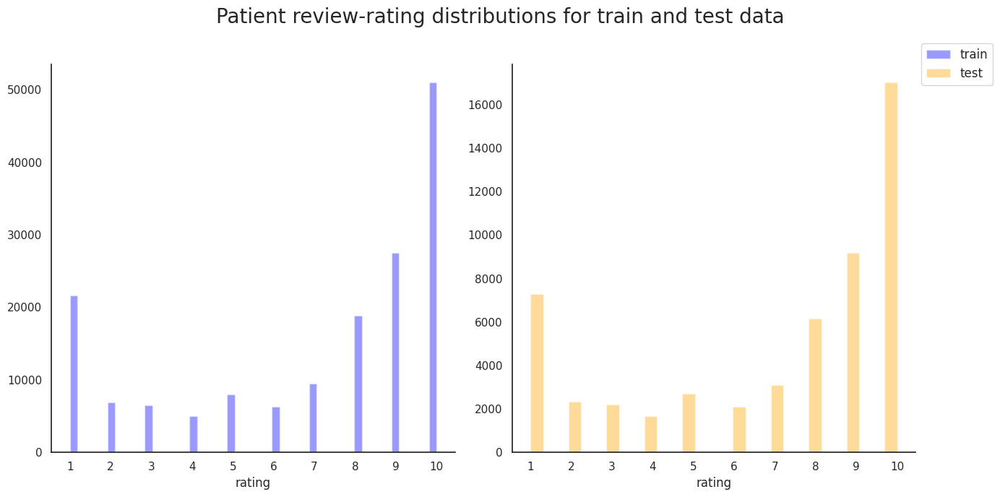
sns.set(style="white", palette="muted")
f, ax = plt.subplots(1, 1, figsize=(7, 7))
sns.despine(left=False)
df_all['year'] = df_all['date'].dt.year
df_all['month'] = df_all['date'].dt.month
df_all['weekday'] = df_all['date'].dt.weekday
years=sorted(df_all['year'].unique())
g = sns.distplot(df_all['year'],bins=len(years),
kde=False,
ax=ax)
# fix the ticks and labels
for i,rect in enumerate(g.patches):
rect.set_width(1)
rect.set_x(years[i]-0.5)
ax.set_xticks(list(np.asarray(years)))
plt.suptitle('Number of reviews per year', fontsize=20)
plt.tight_layout()
plt.show()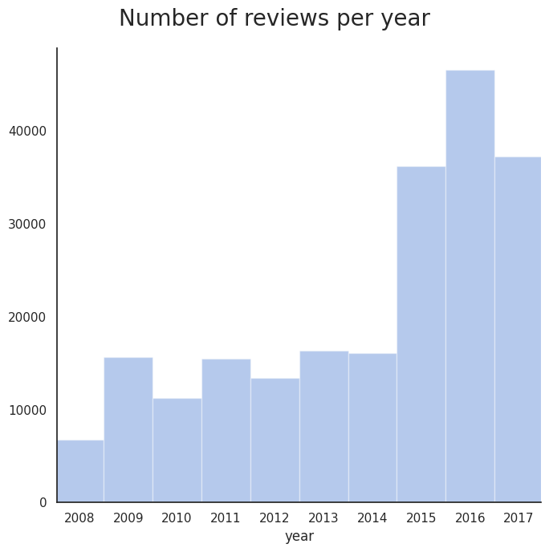
Variation of review count over the years
sns.set(style="white", palette="muted")
f, ax = plt.subplots(1, 1, figsize=(7, 7))
sns.despine(left=False)
month_names = [month_name[x] for x in np.arange(1,13)];
df_all['month'] = df_all['date'].dt.month
months=sorted(df_all['month'].unique())
g = sns.distplot(df_all['month'],bins=len(months),
kde=False,
ax=ax)
# fix the ticks and ticklabels
for i,rect in enumerate(g.patches):
rect.set_width(1)
rect.set_x(months[i]-0.5)
g.set_xticks(months)
g.set_xticklabels(month_names, rotation=90)
plt.suptitle('Number of reviews for each month', fontsize=20)
plt.tight_layout()
plt.show()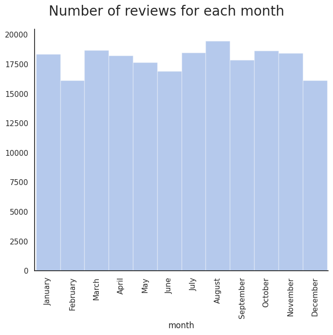
Mean weekday, monthly, and annual ratings
weekdays = ['Sunday', 'Monday', 'Tuesday', 'Wednesday', 'Thursday', 'Friday', 'Saturday']
f, ax = plt.subplots(3, 1, figsize=(14, 14), sharex=False, dpi=200)
g_y = sns.boxplot(x='year', y='rating',data=df_all, ax=ax[0], palette="Paired", showmeans=True)
g_m = sns.boxplot(x='month', y='rating',data=df_all, ax=ax[1], palette="Paired", showmeans=True)
g_d = sns.boxplot(x='weekday', y='rating',data=df_all, ax=ax[2], palette="Paired", showmeans=True)
g_d.set_xticklabels(weekdays);
g_m.set_xticklabels(month_names);
plt.suptitle('Average user rating for each weekday, month, and year', fontsize=22, y=0.92);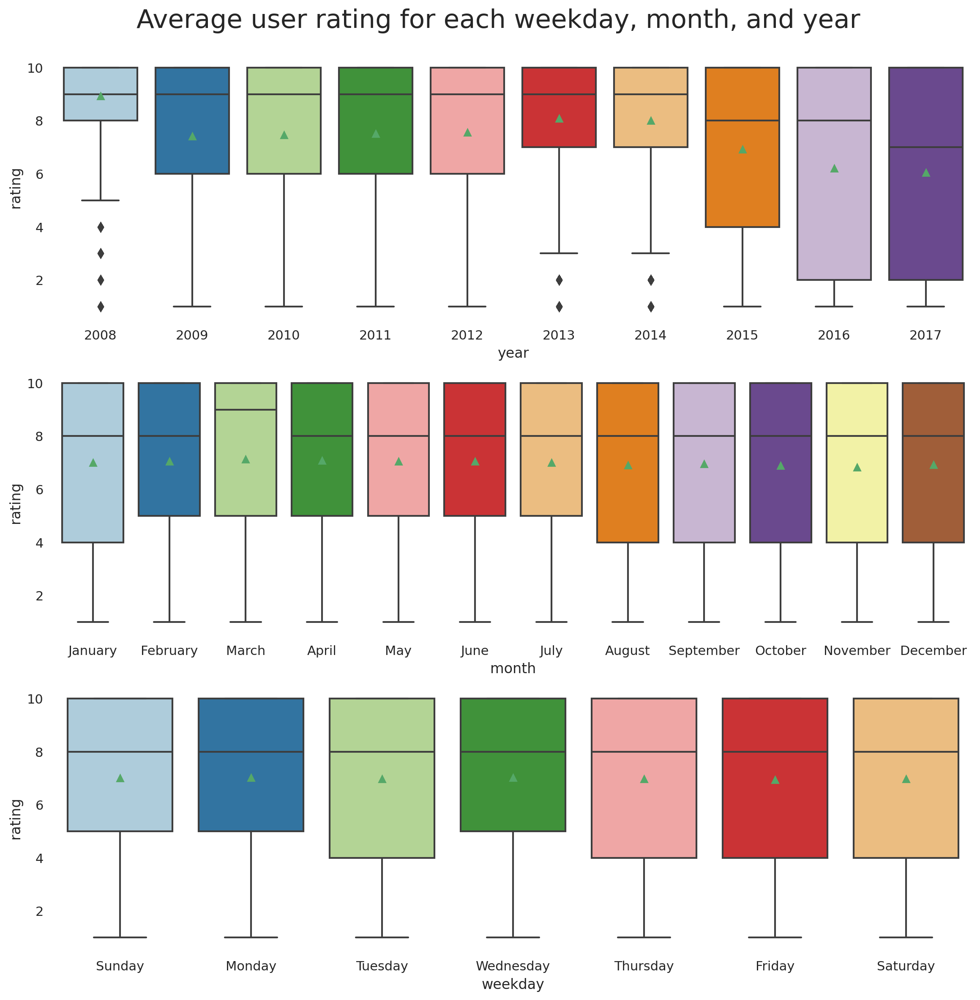
Hmmm... Drugs getting worse or user becoming more critical?
Most common medical conditions
fig, ax = plt.subplots(1, 1, figsize=(16, 6), dpi=200)
n_conditions = 20
g = sns.countplot(x='condition',
data=df_all,
order=df_all.condition \
.value_counts() \
.iloc[:n_conditions] \
.index,
ax=ax)
g.set_xlabel(g.get_xlabel(), fontsize=22)
g.set_ylabel(g.get_ylabel(), fontsize=22, labelpad=10)
ylabs = g.get_yticklabels()
plt.setp(ax.get_xticklabels(), rotation=45, ha='right', fontsize=16)
plt.setp(ax.get_yticklabels(), fontsize=16)
g.set_title(f'Top {n_conditions} frequent medical conditions',y=1.05, fontsize=28)
sns.despine(left=False)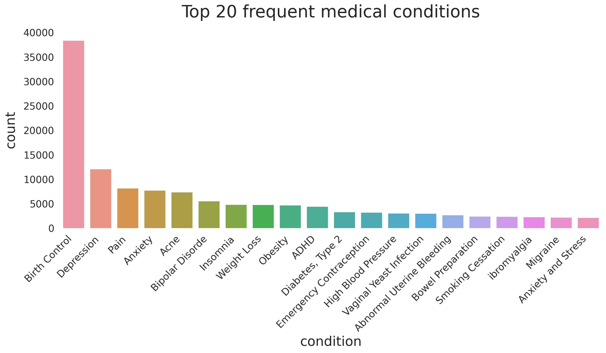
Drugs that are prescribed for many conditions
Another interesting observation is to look at the numebr of drugs that are used to address mutiple different medical conditions and see how the user ratings change for each condition. In other words, if a drug is known to be good for addressing condition 'A' does that mean it will do a good job in adressing condition 'B'?
n_drugs = 20
drugs_w_most_cond = df_all.groupby(['drugName'])['condition'] \
.nunique() \
.sort_values(ascending=False)[:n_drugs]
print(drugs_w_most_cond)drugName Prednisone 39 Gabapentin 31 Ciprofloxacin 25 Doxycycline 25 Amitriptyline 24 Neurontin 23 Metronidazole 23 Venlafaxine 23 Lyrica 22 Dexamethasone 22 Zoloft 21 Cymbalta 20 Triamcinolone 20 Azithromycin 20 Clarithromycin 19 Seroquel 19 Effexor XR 19 Cipro 18 Sertraline 18 Naproxen 18 Name: condition, dtype: int64
fig, ax = plt.subplots(1, 1, figsize=(16, 6), dpi=200)
drug_arr = []
for i, (drug, count) in enumerate(drugs_w_most_cond.items()):
drug_arr += count*[drug]
tmp_df = pd.DataFrame(drug_arr, columns=['drug'])
g = sns.countplot(x='drug', data=tmp_df, ax=ax)
g.set_xlabel(g.get_xlabel(), fontsize=22)
g.set_ylabel(g.get_ylabel(), fontsize=22, labelpad=10)
ylabs = g.get_yticklabels()
plt.setp(ax.get_xticklabels(), rotation=45, ha='right', fontsize=16)
plt.setp(ax.get_yticklabels(), fontsize=16)
g.set_title('Drugs addressing the most unmber of unique medical conditions',y=1.05, fontsize=28)
sns.despine(left=False)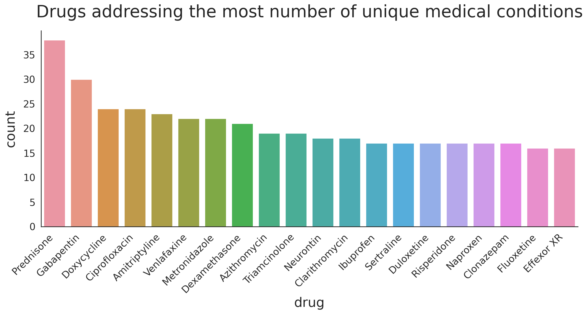
Conditions that are treated using multiple different drugs
Similar to previous analysis, we can take a look at the conditions that are treated using variety of drugs.
n_conditions = 20
conditions_w_most_drugs = df_all.groupby(['condition'])['drugName'] \
.nunique() \
.sort_values(ascending=False)[:n_conditions]
print(conditions_w_most_drugs)condition
Not Listed / Othe 253
Pain 219
Birth Control 181
High Blood Pressure 146
Acne 127
Depression 115
Rheumatoid Arthritis 107
Diabetes, Type 2 97
Allergic Rhinitis 95
Insomnia 85
Osteoarthritis 84
Bipolar Disorde 82
Anxiety 81
Abnormal Uterine Bleeding 77
Endometriosis 64
3 users found this comment helpful. 62
Psoriasis 61
Migraine 60
ADHD 58
4 users found this comment helpful. 57
Name: drugName, dtype: int64
Note that there are some conditions that we need to remove, i.e. Not Listed / Othe , 3 users found this comment helpful , and 4 users found this comment helpful. We can define a pattern using regular expressions to find the problematic rows as follows.
df_all[df_all.condition.str.contains('(^nan$|Not Listed|found this comment helpful)')].head()| uniqueID | drugName | condition | review | rating | date | usefulCount | |
|---|---|---|---|---|---|---|---|
| 104 | 220696 | Loestrin 24 Fe | 2 users found this comment helpful. | "I'm 16 and I have been on Loestrin 24 f... | 3 | 2010-11-03 | 2 |
| 194 | 67383 | Provera | 4 users found this comment helpful. | "I'm 24 years old and have always had a p... | 1 | 2016-03-27 | 4 |
| 241 | 81588 | Yaz | 3 users found this comment helpful. | "I took Yaz for a little over 2 years. From a... | 3 | 2010-06-01 | 3 |
| 262 | 132965 | Loestrin 24 Fe | 4 users found this comment helpful. | "Took this pill for 1.) Acne and 2.) Birth Con... | 2 | 2014-06-24 | 4 |
| 389 | 91050 | Norco | 11 users found this comment helpful. | "I have suffered with low back pain - 2 surger... | 9 | 2009-03-15 | 11 |
We drop the rows corresponding to the mis-parsed conditions and then plot the data.
bad_indices = df_all[df_all.condition.str.contains('(^nan$|Not Listed|found this comment helpful)')].index
df_all.drop(bad_indices, inplace=True)
df_all.reset_index(drop=True)
conditions_w_most_drugs = df_all.groupby(['condition'])['drugName'] \
.nunique() \
.sort_values(ascending=False)[1:n_conditions+1]
fig, ax = plt.subplots(1, 1, figsize=(16, 6), dpi=200)
condition_arr = []
for i, (condition, count) in enumerate(conditions_w_most_drugs.items()):
condition_arr += count*[condition]
tmp_df = pd.DataFrame(condition_arr, columns=['condition'])
g = sns.countplot(x='condition', data=tmp_df, ax=ax)
g.set_xlabel(g.get_xlabel(), fontsize=22)
g.set_ylabel(g.get_ylabel(), fontsize=22, labelpad=10)
ylabs = g.get_yticklabels()
plt.setp(ax.get_xticklabels(), rotation=45, ha='right', fontsize=16)
plt.setp(ax.get_yticklabels(), fontsize=16)
g.set_title('Medical conditions with the most number of unique drugs addressing them',y=1.05, fontsize=28)
sns.despine(left=False)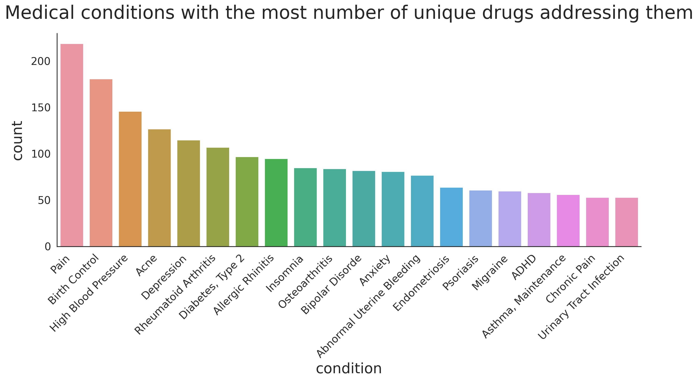
Variation of usefulCount with rating
One of the questions that I had was whether the positiveness/negativeness of the rating influence the number of peole that find the review useful?
f, ax = plt.subplots(1, 1, figsize=(14, 6), dpi=200)
g = sns.boxplot(y='usefulCount', x='rating',data=df_all,
ax=ax, palette="Paired", showmeans=True,
showfliers=False)
g.set_title('The distribution of usefulCount for different drug ratings.'+
'\n(outliers are not shown)', fontsize=24, y=1.02);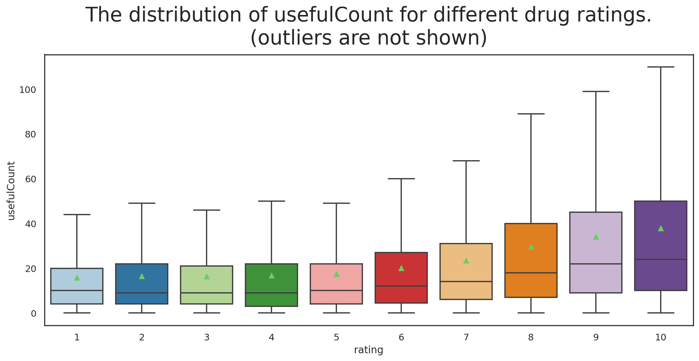
I find this result really interesting. What we can infer from it is that a positive review is more likely to be found useful than a negative review by others who read the review.
As we observed in Figure 2, the highly-rated reviews are more frequent compared to the poorly-rated ones. We need to define a metric for a positive vs. negative to be able to further inspect the quality of the reviews. Gouping the reviews into positive and negative categories can shed light on the correlation of the review ratings with more than just one other feature. For now, we classify the reviews with rating below 5.5 as negative and otherwise positive.
df_all['rating_binary'] = df_all['rating'].apply(lambda x: 'positive' if x>5.5 else 'negative')
print("The dataset includes {0:d} positive and {1:d} negative reviews" \
.format(len(df_all[df_all["rating_binary"]=="positive"]), \
len(df_all[df_all["rating_binary"]=="negative"])))The dataset includes 148682 positive and 63424 negative reviews
df_all.head()| uniqueID | drugName | condition | review | rating | date | usefulCount | year | month | rating_binary | |
|---|---|---|---|---|---|---|---|---|---|---|
| 0 | 206461 | Valsartan | Left Ventricular Dysfunction | "It has no side effect, I take it in combinati... | 9 | 2012-05-20 | 27 | 2012 | 5 | positive |
| 1 | 95260 | Guanfacine | ADHD | "My son is halfway through his fourth week of ... | 8 | 2010-04-27 | 192 | 2010 | 4 | positive |
| 2 | 92703 | Lybrel | Birth Control | "I used to take another oral contraceptive, wh... | 5 | 2009-12-14 | 17 | 2009 | 12 | negative |
| 3 | 138000 | Ortho Evra | Birth Control | "This is my first time using any form of birth... | 8 | 2015-11-03 | 10 | 2015 | 11 | positive |
| 4 | 35696 | Buprenorphine / naloxone | Opiate Dependence | "Suboxone has completely turned my life around... | 9 | 2016-11-27 | 37 | 2016 | 11 | positive |
I use Seaborn's boxenplot() (or Letter-value plot) for visualization. It can be thought of as an extension of boxplot that is more convenient for large data as it offers more precise estimates of quantiles beyond the quartiles which might be important but missed when using boxplot. Furthermore, I include two plots for this part where the first plot (Figure 10) shows the data where the top and bottom 0.01% of the population are removed and the second plot (Figure 11) shows the full data.
f, ax = plt.subplots(1, 1, figsize=(14, 14), dpi=200)
sns.set_style('dark')
bar_width = 0.8
q_low = df_all["usefulCount"].quantile(0.01)
q_hi = df_all["usefulCount"].quantile(0.99)
df_outliers_removed = df_all[(df_all["usefulCount"] < q_hi) & (df_all["usefulCount"] > q_low)]
means_positive = df_all[df_all['rating_binary']=='positive'].groupby('year')['usefulCount'].mean()
means_negative = df_all[df_all['rating_binary']=='negative'].groupby('year')['usefulCount'].mean()
means = np.hstack([means_positive,means_negative])
g = sns.boxenplot(x="year", y="usefulCount", hue="rating_binary",width=bar_width,
palette="pastel", data=df_outliers_removed, ax=ax)
g.set_xlabel(g.get_xlabel(), fontsize=18)
g.set_ylabel(g.get_ylabel(), fontsize=18)
for i,mu in enumerate(means):
shift = bar_width/4*pow(-1,i+1); # shift left for positive, right for negative
g.text(i//2+shift, mu, f"{np.round(mu,1)}",
fontdict={'color':'black', 'fontsize':10}, rotation=0, ha='center', va='center',
bbox=dict(facecolor='white', alpha=0.4, edgecolor=None))
plt.legend(bbox_to_anchor=(0.5, 1.05), loc='center', borderaxespad=0., title='rating binary')
g.set_title('Distribution of usefulCount for positive and negative reviews in each year.\n'+
'(outliers removed)', fontsize=24, y=1.1);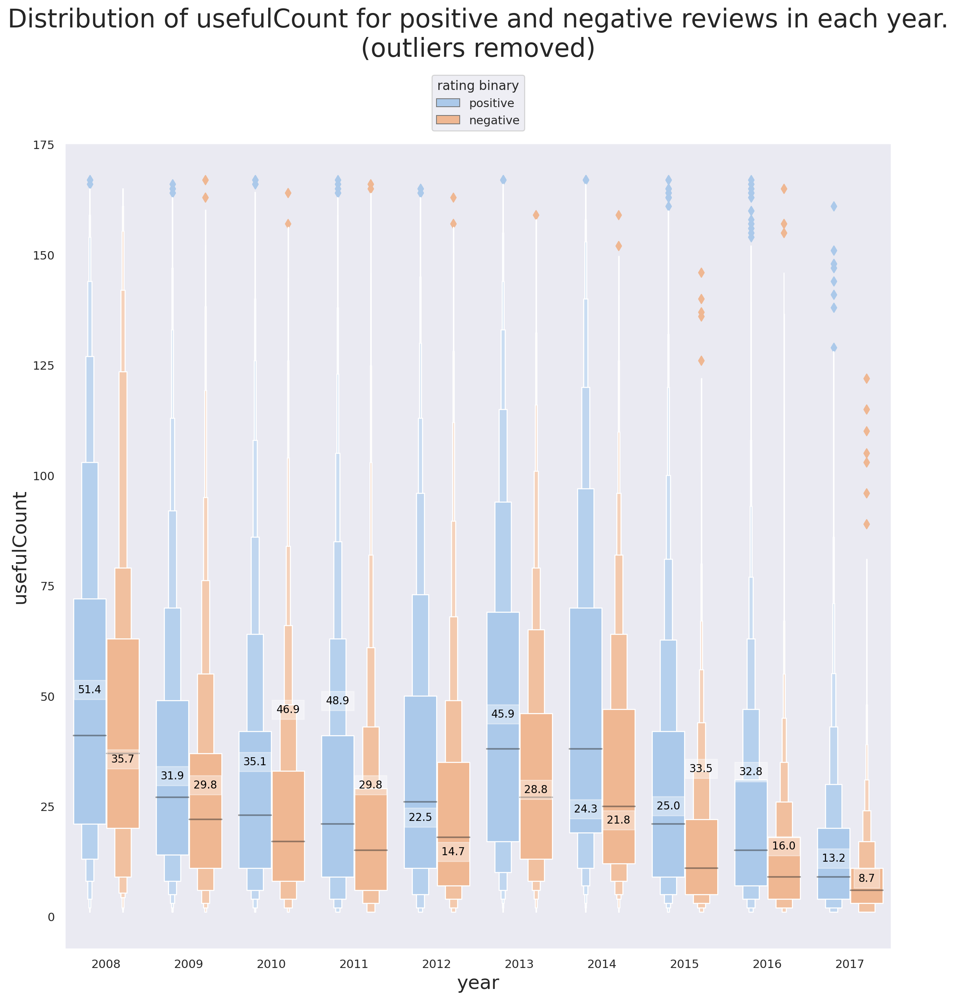
f, ax = plt.subplots(1, 1, figsize=(14, 28), dpi=200)
sns.set_style('dark')
bar_width = 0.8
means_positive = df_all[df_all['rating_binary']=='positive'].groupby('year')['usefulCount'].mean()
means_negative = df_all[df_all['rating_binary']=='negative'].groupby('year')['usefulCount'].mean()
means = np.hstack([means_positive,means_negative])
g = sns.boxenplot(x="year", y="usefulCount", hue="rating_binary",width=bar_width,
palette="pastel", data=df_all, ax=ax)
g.set_xlabel(g.get_xlabel(), fontsize=18)
g.set_ylabel(g.get_ylabel(), fontsize=18)
for i,mu in enumerate(means):
shift = bar_width/4*pow(-1,i+1); # shift left for positive, right for negative
g.text(i//2+shift, mu, f"{np.round(mu,1)}",
fontdict={'color':'black', 'fontsize':10}, rotation=0, ha='center', va='center',
bbox=dict(facecolor='white', alpha=0.4, edgecolor=None))
plt.legend(bbox_to_anchor=(0.5, 1.02), loc='center', borderaxespad=0., title='rating binary')
plt.setp(ax.get_xticklabels(), fontsize=14)
plt.setp(ax.get_yticklabels(), fontsize=14)
g.set_title('Distribution of usefulCount for positive and negative reviews in each year', fontsize=24, y=1.04);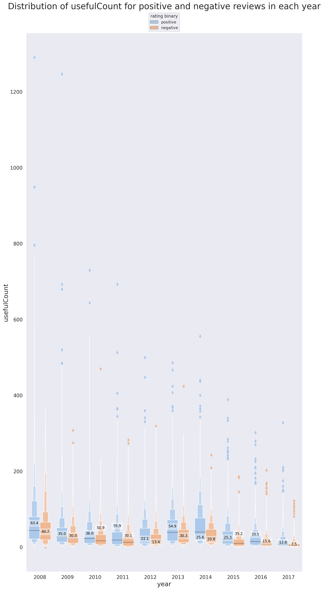
There are some interesting detils tht are revealed using Figures 9 and 10.
-
In support of the point brought up previously, that positive reviews are more likely to be found useful, we can see that the mean
usefulCountfor positive reviews is higher than that of the negative reviews in 8 out of 10 years (every year except 2010 and 2015). -
2012 and 2014 are the only years where the mean of
usefulCountis lower than its median for both positive and negative reviews (same for negative reviews of 2008). What this tells us is that there are -
The median of
usefulCountfor positive reviews is higher than that of the negative reviews for all years. -
Note that hwo excluding the reviews with very high
usefulCountcan influence our interpretation. In this specific project, the reviews with highusefulCountcan't and shouldn't be excluded because they are simply not outliers. -
The reason why almost all the outliers (denoted by the diamond symbol) in both figures 9 and 10 correspond to the observations with high
usefulCountis that there are a lot of reviews whereusefulCount=0and in fact a quick investigation shows that the number of observations withusefulCount=0is more than 1% of all the reviews. This is also the reason behind the mean of the population dropping for all the situations (TheusefulCountcan't be negative!)
pct = abs((len(df_all[(df_all["usefulCount"] > q_low)])-len(df_all))/len(df_all))*100
print(f"{pct:.1f}%")3.8%
Sentiment Analysis
Sentiment analysis is the process of analyzing text/voice data using natural language processing (NLP), text analysis, and computational linguistics to extract and determine the emotional tone, attitude, or opinion carried by the data. The use of sentiment analysis is common in areas such as healthcare, social media, and marketing to study surveys, reviews, user comments, customer text/voice etc.
Data preparation for sentiment analysis
Stopwords
stopwords are words that we do not want them taking up space in our database, or taking up valuable processing time. For this, we can remove them easily by storing a list of words that we consider to be stop words. Even though when it comes to sentiment analysis the popular opinion is to remove stopwords, removing them is not always the best idea, especially if the context of the phrases may influence the performance of the algorithm.
For now we will remove the stopwords from the review column but we first make sure that the ones that carry an emotional meaning are not removed as they are important for sentiment analysis; For instance, there are many words (see below) with negative connotation that are required to be removed them from the stopwords:
| aren't | haven't | not |
| couldn't | isn't | can't |
| didn't | mightn't | shan't |
| doesn't | mustn't | shouldn't |
| don't | needn't | wasn't |
| hadn't | no | weren't |
| hasn't | nor | wouldn't |
Cleaning, tokenization, and stemming
We already scanned the reviews to remove unwanted html characters using the 'html.parser' of BeautifulSoup. However, there is some further cleaning necessary besides the removal of unwanted characters. We also need to tokenize the reviews, i.e. break it up to pieces such as words, keywords, phrases, symbols etc. before sttempting to train the model for Sentiment Analysis.
We will define a simple function for text-cleaning, tokenization, and removal of the important negative verbs from the list of stopwords. We also take advantage of nltk's stopwords library to make sure all the unwanted words are removed from the reviews. Lastly, we use nltk's SnowballStemmer which is meant to remove morphological affixes from words, leaving only the word stem. This can reduce the computation cost significantly.
from wordcloud import WordCloud, STOPWORDS
import nltk
from nltk import PorterStemmer as Porter_stemmer
from nltk.corpus import stopwords
from nltk.stem.snowball import SnowballStemmer
from bs4 import BeautifulSoup
nltk.download('stopwords')
Snowball_stemmer = SnowballStemmer('english', ignore_stopwords=True)
nltk_stopwords = stopwords.words('english')
stopWords = STOPWORDS.union(nltk_stopwords)
remove_from_stopWords = ["aren't", "couldn't", "didn't", "doesn't", "don't", "hadn't", "hasn't",
"haven't", "isn't", "mightn't", "mustn't", "needn't", "no", "nor", "not",
"can't", "shan't", "shouldn't", "wasn't", "weren't", "wouldn't"]
for i in remove_from_stopWords:
stopWords.remove(i)
def clean_review(raw_review, stopWords=stopWords, stemmer=Snowball_stemmer):
# 1. Substitute all non-letter characters with a space
letters_only = re.sub('[^a-zA-Z]', ' ', review_text)
# 2. lower letters and remove spaces
words = letters_only.lower().split()
# 3. Stopwords
meaningfulWords = [w for w in words if not w in stopWords]
# 4. Stemming
stemming_words = [stemmer.stem(w) for w in meaningfulWords]
# having
# had ======> have
# have
# 5. space join words and return
return( ' '.join(stemming_words))We can run a quick sanity check!
print(df_train['review'][110])"Been dealing with restless leg syndrome.for about 2 years. It kept me from falling asleep. First they gave me flexiril. And it did nothing. Than a miracle came about and I was prescribed reprinol and my legs haven't twitched since . Amazing drug I must say. My sleep has improved greatly"
print(clean_review(df_train['review'][110]))deal restless leg syndrom year kept fall asleep first gave flexiril noth miracl came prescrib reprinol leg twitch amaz drug must say sleep improv great
Note that not all the words are going to look meaningful since we see the stems.
WordCloud
wordcloud is a nice way to visually represent of words. I use python's WordCloud library for this purpose. We can take a look at most frequent words in positive and negative reviews using a customized wordcloud function.
def cloud_of_words(text_df, mask=None, fig_size=(16, 5), collocations=True,
max_words=150, width=800, height=250, background_color="#006666",
stopWords=None, relative_scaling=0, title='word cloud',
title_size=28, random_state=None, max_font_size=100, colormap=None):
wordcloud = WordCloud(stopwords=stopWords, max_words=max_words, collocations=collocations,
max_font_size=max_font_size, random_state=random_state,
width=width, height=height, mask=mask, background_color=background_color,
colormap=colormap, relative_scaling=relative_scaling).generate(str(text_df))
plt.figure(figsize=fig_size)
plt.imshow(wordcloud)
plt.title(title, fontsize=title_size, y=1.02)
plt.axis('off')
plt.tight_layout()We can now visualize the wordcloud of positive
cloud_of_words(df_all[df_all['rating_binary']=='positive']['review'],
stopWords=stopWords,
title='Frequent words in positive reviews',
colormap='magma',
background_color='steelblue')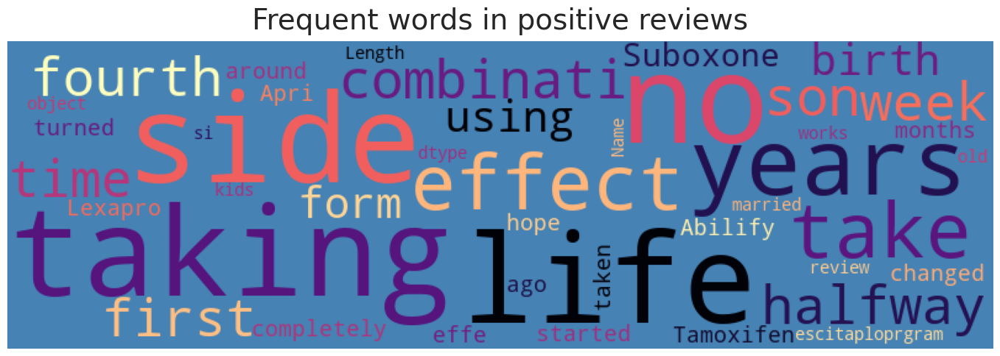
and negative reviews.
cloud_of_words(df_all[df_all['rating_binary']=='negative']['review'],
stopWords=stopWords,
title='Frequent words in negative reviews',
colormap='autumn')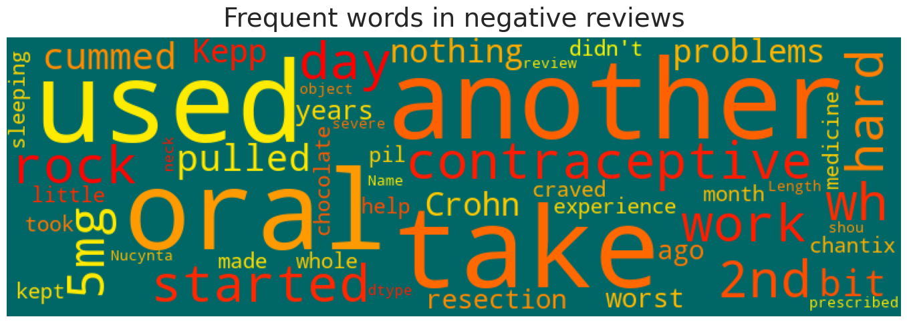
Language Models
Bag of words
Bag of words is one of the simplest yet commonly used language models that represents a sentence as the multiset of the words forming the sentence. multiset meaning that even though the model disregards grammar and word order, it cares about the number of instances that each word is used in the sentence. The main idea behind this model is that the sentences sharing more words in common are more likely to belong to the same class, e.g., positive vs. negative classes.
CountVectorizer modules of sklearn is one of the easiest way to build a bag-of-words model. Let's take a look at a simple demonstration:
docs = ['Today is a nice day.',
'I love reading science fiction books.',
'Are you coming to Al\'s wedding reception tonight?',
'We are going to analyze these documents',
'The storyline was not as great as the acts.',
'Nice job kids! Moving on to the next game!',
'I am good at things I never do!']
docs_vectorizer = CountVectorizer()
X = docs_vectorizer.fit_transform(docs)
# X is the vectorized matrix where each row corresponds to a sentence and each column
# corresponds to a word. Every elemnt X_ij shows the number of times word "j"
# is used in document "i". In this case, we have 7 sentences.
print(X.shape)(7, 41)
# features
print(docs_vectorizer.get_feature_names())['acts', 'al', 'am', 'analyze', 'are', 'as', 'at', 'books', 'coming', 'day', 'do', 'documents', 'fiction', 'game', 'going', 'good', 'great', 'is', 'job', 'kids', 'love', 'moving', 'never', 'next', 'nice', 'not', 'on', 'reading', 'reception', 'science', 'storyline', 'the', 'these', 'things', 'to', 'today', 'tonight', 'was', 'we', 'wedding', 'you']
Note that CountVectorizer doesn't care about the noisy words such as ["on", "at", "to", "am"] etc. which appear a lot but don't help much with extraxting the emotions from the review.
# matrix
X.toarray()array([[0, 0, 0, 0, 0, 0, 0, 0, 0, 1, 0, 0, 0, 0, 0, 0, 0, 1, 0, 0, 0, 0,
0, 0, 1, 0, 0, 0, 0, 0, 0, 0, 0, 0, 0, 1, 0, 0, 0, 0, 0],
[0, 0, 0, 0, 0, 0, 0, 1, 0, 0, 0, 0, 1, 0, 0, 0, 0, 0, 0, 0, 1, 0,
0, 0, 0, 0, 0, 1, 0, 1, 0, 0, 0, 0, 0, 0, 0, 0, 0, 0, 0],
[0, 1, 0, 0, 1, 0, 0, 0, 1, 0, 0, 0, 0, 0, 0, 0, 0, 0, 0, 0, 0, 0,
0, 0, 0, 0, 0, 0, 1, 0, 0, 0, 0, 0, 1, 0, 1, 0, 0, 1, 1],
[0, 0, 0, 1, 1, 0, 0, 0, 0, 0, 0, 1, 0, 0, 1, 0, 0, 0, 0, 0, 0, 0,
0, 0, 0, 0, 0, 0, 0, 0, 0, 0, 1, 0, 1, 0, 0, 0, 1, 0, 0],
[1, 0, 0, 0, 0, 2, 0, 0, 0, 0, 0, 0, 0, 0, 0, 0, 1, 0, 0, 0, 0, 0,
0, 0, 0, 1, 0, 0, 0, 0, 1, 2, 0, 0, 0, 0, 0, 1, 0, 0, 0],
[0, 0, 0, 0, 0, 0, 0, 0, 0, 0, 0, 0, 0, 1, 0, 0, 0, 0, 1, 1, 0, 1,
0, 1, 1, 0, 1, 0, 0, 0, 0, 1, 0, 0, 1, 0, 0, 0, 0, 0, 0],
[0, 0, 1, 0, 0, 0, 1, 0, 0, 0, 1, 0, 0, 0, 0, 1, 0, 0, 0, 0, 0, 0,
1, 0, 0, 0, 0, 0, 0, 0, 0, 0, 0, 1, 0, 0, 0, 0, 0, 0, 0]])
Here's one way to see how the matrix represents the words in the documents:
doc1_binary_ids = X.toarray()[0,:]
doc1_ids = np.where(doc1_binary_ids>0)
features_arr = np.asarray(docs_vectorizer.get_feature_names())
features_arr[doc1_ids]array(['day', 'is', 'nice', 'today'])
We can see that CountVectorizer does not maintain the word order. In large datasets like our dataset, noisy words reflect very little insigh about the document contents. Therefore, using count data as is to train a classifier causes these frequent but useless terms shadow the frequencies of rarer yet relevant terms that carry a lot of information about the review context. Term-Frequency Inverse Document-Frequency (TF-IDF) is one way of handling such situations. $\text{tf-idf(t,d)}$ is TF-IDF of the term $t$ in the document $d$ and is defined as:
where Term Frequency (TF) $\text{tf(t,d)}$ is the number of times the term $t$ occurs in the document $d$ and Inverse Document-Frequency (IDF) $\text{idf(t)}$ is computed as:
$$ \text{idf}(t) = \log{\dfrac{1 + n}{1+\text{df}(t)}} + 1. $$Document Frequency $\text{df}(t)$ accounts for the count of those documents containing the term $t$ and $n$ is the total number of documents in the data. TF-IDF is usually normalized by the Euclidean norm as:
$$ \text{tf}^{\, L_2-\text{ norm}}(t,d) = \dfrac{\text{tf}(t,d)}{\sqrt{\sum\limits_{\text{term}}^{\text{all terms}} \text{tf}(\text{term},d)^2}} $$
Note: sklearn slightly tweaks the definition of $\text{idf(t)}$ as:
$$
\text{idf}(t) = \log{\dfrac{n}{1+\text{df}(t)}}.
$$
Finally, setting the smooth_idf argument of sklearn's TfidfVectorizer to False changes the above definition to:
n-grams
n-gram is a contiguous sequence of n items from a given sample of text or speech (ref). n-grams are widely used in NLP for applications such as spelling correction, word breaking and text summarization. The following table shows the n-gram representation of "This is a beautiful present!" for n=1 (unigram), n=2 (bigram), n=3 (trigram), and n=4(4-gram).
| unigram | bigram | trigram | 4-gram |
|---|---|---|---|
| This | This is | This is a | This is a beautiful |
| is | is a | is a beautiful | is a beautiful present! |
| a | a beautiful | a beautiful present! | |
| beautiful | beautiful present! | ||
| present! |
Next, we define a simple function to generate n-grams. We will use this function later on in our training pipeline.
def gen_n_grams(sentence, n=4, stopWords=stopWords):
token = [token for token in sentence.lower().split(
' ') if token != '' if token not in stopWords]
n_grams = zip(*[token[i:] for i in range(n)])
return [' '.join(gram) for gram in n_grams]
gen_n_grams('The beautiful moment that all of us have been waiting for has finally arrived!')['beautiful moment us waiting', 'moment us waiting finally', 'us waiting finally arrived!']
Note that the stopwords are removed before the n-grams are generated.
Visualizing most frequent n-grams
We first create a dictionary to store the n-grams of lengths 1 to 5.
from collections import defaultdict
import time
frequency_dict = defaultdict(int)
review_categories = ['positive', 'negative']
grams = [1, 2, 3, 4, 5]
# initialize the dictionaries
for review_category in review_categories:
frequency_dict[review_category]={}
for n in grams:
frequency_dict[review_category][n]={}
print(frequency_dict)defaultdict(, {'positive': {1: {}, 2: {}, 3: {}, 4: {}, 5: {}}, 'negative': {1: {}, 2: {}, 3: {}, 4: {}, 5: {}}})
Now we can populate the dictionary with the n-grams as keys and the number of times they have been observed as the values.
for review_category in review_categories:
start = time.time()
for [review,rating] in df_all[df_all['rating_binary']==review_category].iloc[:,[3,4]].values:
for n in grams:
for ngram in gen_n_grams(clean_review(review), n):
frequency_dict[review_category][n][ngram] = frequency_dict[review_category][n].get(ngram, np.array([1,rating])) + np.array([1,rating])
print(f"done with {review_category} reviews. took {time.time()-start:.2f} seconds!")
# save the dictionary
f = open("grams_dict.pkl", "wb")
pickle.dump(frequency_dict, f)
f.close()done with positive reviews. took 360.87 seconds! done with negative reviews. took 147.21 seconds!
Finally, we can visualize the most frequent n-grams for different values of n.
sns.set(rc={'axes.facecolor':'whitesmoke', 'figure.facecolor':'silver', 'legend.facecolor':'white'})
fig, ax = plt.subplots(5, 2, figsize=(12,20), dpi=400)
review_categories = ['positive', 'negative']
grams = [1, 2, 3, 4, 5]
n_most_frequent = 10
colors = ['g', 'r']
fig.tight_layout()
plt.subplots_adjust(left=0, bottom=0, right=1, top=1, wspace=1.2, hspace=0.4)
for i,review_category in enumerate(review_categories):
for j,gram in enumerate(grams):
values = np.asarray(sorted(frequency_dict[review_category][gram].items(),
key=lambda x: x[1][0], reverse=True)[:n_most_frequent])
val_data = np.hstack([values[:,0].reshape(-1,1),
np.vstack(
[values[:,1].reshape(-1,1).flatten()[i] for i in range(n_most_frequent)])]
)
data=pd.DataFrame(data=val_data, columns=['review','review count','total rating'])
data['avg_rating']=data['total rating']/data['review count']
data['binray_review']=[review_category]*len(data)
sns.set_color_codes("pastel")
sns.barplot(x="review count", y="review", data=data,
color=colors[i], ax=ax[j][i])
ax[j][i].set_ylabel('')
ax[j][i].set_title(f"{gram}-grams ({review_category} reviews)", y=1.02, fontsize=20)
ax[j][i].set_xlabel(ax[j][i].get_xlabel(), fontsize=18)
plt.setp(ax[j][i].get_xticklabels(), fontsize=16)
plt.setp(ax[j][i].get_yticklabels(), fontsize=16)
plt.suptitle('Most frequent n-grams in positive and negative reviews', fontsize=24, y=1.05)

By looking at Figure 14 above, we note that 4-grams are the shortest of the n-grams to differentiate between the positive and negative reviews. For instance, we notice that the group of phrases such as ['month', 'take', 'day', 'not', ...] in 1-grams, ['side effect', 'birth control', 'mood swing', ...] in 2-grams, and ['no side effect', 'bad side effect', 'birth control pill', ...] in 3-grams are common among the most frequent $n$-grams in both positive and negative reviews. Looking at 5-grams shows that they could be a good candidate to train a neural network model, as we will see later in the project.
Feature Engineering
We extracted month, year and weekday from review data as a part of Feature Engineering and to visually inspect the potential correlations between these features and the review qulity.
Before building the models, we do some extra bit of Feature Engineering by including some characteristics of the patient reviews as new features. The new features include the review word count (review_w_count), the number of unique words (unique_w_count), and the mean word length (mean_word_len). Even though it makes more sense to calculate both features from raw review, we calculate them using the cleaned review for the sake of time.
df_all['review_w_count']=df_all["review"].apply(lambda review: len(review.split()))
df_all['unique_w_count']=df_all["review"].apply(lambda review: len(set(review.split())))
df_all["mean_w_len"] = df_all["review"].apply(lambda review: np.mean([len(word) for word in review.split()]))
Next, we drop the date column because it's redundant. We also remove the uniqueID because it's useless in the context of this project.
df_all.drop(columns=['date','uniqueID'], inplace=True)
Finally, I also decided to quantify the reviews using the sentiment.polarity module of textblob library. The outcomes area number between 0 and 1 so I rescale them to an integer in the range 1 to 10. I do this so that I can assess how it correlates with the review ratings in the next part.
df_all['tb_sentiment_polarity'] = df_all['review'].apply(lambda review: TextBlob(review).sentiment.polarity)Correlation Plot
We can now look at the potential correlation between the numerical variables of the model. We digitize the rating_binary column so that we can include it in the matrix.
df_all['rating_binary'] = df_all['rating'].apply(lambda rating: 1 if rating > 5 else 0)
fig, ax = plt.subplots(1, 1, figsize=(14,14))
corr = df_all.select_dtypes(include = 'int64').corr()
g = sns.heatmap(
corr,
vmin=-1, vmax=1, center=0,
cmap='Spectral',
square=True,
ax=ax,
cbar_kws={'shrink': 0.8}
)
plt.setp(ax.get_xticklabels(), rotation=45, horizontalalignment='right')
ax.set_title('Correlation Matrix', fontsize=18, y=1.02);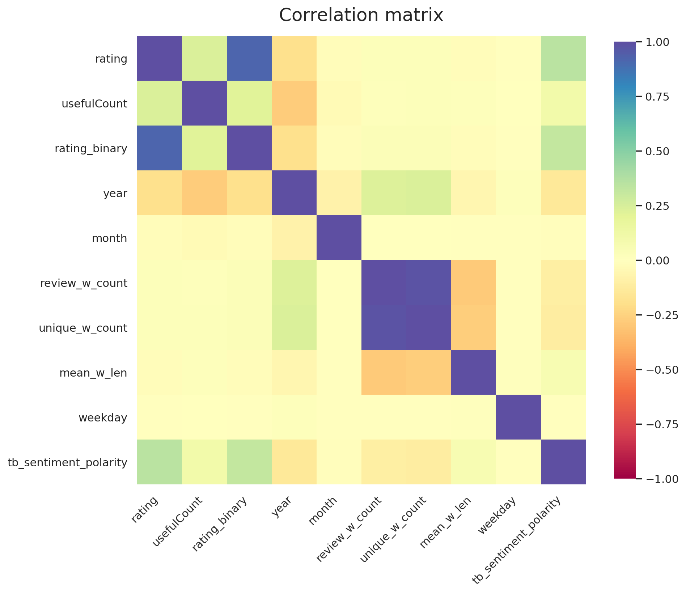
Let's go through the correlations that we see in Figure 15 one by one:
- The strong correlations between
rating_binaryandratingis expected as the former is derived from the latter - As expected, the sentiment polarity score from
TextBlobshows a semi strong correlation with theratingof the review. - The strong correlation between
review_w_countandunique_w_countis not surprising when looking at their definitions - The weak anti-correlation between
yearandratingis something we observed previously in Figure 5 - The weak correlation of
yearwithunique_w_countandunique_w_countthat we are able to see thanks to feature engineering. It implies that the newer reviews are longer?!
Machine learning models for sentiment analysis
We start off by asessing the performance of a simple Bayesian classifier, MultinomialNB() and a more sophisticated RandomForestClassifier() in identifying positive and negative reviews, simply by knowing the review column as feature. The target variable in this case would be the column rating_binary.
I use to common word vectorizers from sklearn, namely, CountVectorizer() and TfidfVectorizer to see how each influence the performance of the ML models.
# split the feature-engineered data
X_train, X_test, y_train, y_test = train_test_split(df_all.review,
df_all.rating_binary,
test_size=0.1,random_state=110,
stratify = df_all.rating_binary
)
# Pipeline to serialize the vectorizer and classifier
estimators = [Pipeline([('CountVectorizer', CountVectorizer()),
('Naive Bayes classifier', MultinomialNB())]
),
Pipeline([('TfidfVectorizer', TfidfVectorizer()),
('Naive Bayes classifier', MultinomialNB())]
),
Pipeline([('CountVectorizer', TfidfVectorizer()),
('Random Forest classifier', RandomForestClassifier(n_estimators=100,
random_state=42,
max_depth = 10000,
min_samples_split = 0.001))]
),
Pipeline([('TfidfVectorizer', TfidfVectorizer()),
('Random Forest classifier', RandomForestClassifier(n_estimators=100,
random_state=42,
max_depth = 10000,
min_samples_split = 0.001))]
)
]
# fit
preds = []
for i,estimator in enumerate(estimators):
now = time()
estimator.fit(X_train, y_train)
preds.append(estimator.predict(X_test))
print("took {:.2f} seconds for {} using {}".format(time()-now,
estimator.get_params()['steps'][1][0],
estimator.get_params()['steps'][0][0],
))
print(f"train accuracy: {estimator.score(X_train, y_train)*100:.2f}%")
print(f"test accuracy: {estimator.score(X_test, y_test)*100:.2f}%")took 10.38 seconds Naive Bayes classifier using CountVectorizer train accuracy: 82.26% test accuracy: 80.76% took 10.80 seconds Naive Bayes classifier using TfidfVectorizer train accuracy: 77.40% test accuracy: 76.54% took 211.20 seconds Random Forest classifier using CountVectorizer train accuracy: 88.04% test accuracy: 78.28% took 243.36 seconds Random Forest classifier using TfidfVectorizer train accuracy: 95.18% test accuracy: 83.89%
Confusion matrix provides a nice way to assess the performance of the machine learning models we trained in this part.
fig, ax = plt.subplots(1, 1, figsize=(6,6), dpi=100)
labels = ["Negative", "Positive"]
y_pred = estimator.predict(X_test)
conf_mat = confusion_matrix(y_test, y_pred)
sns.heatmap(conf_mat, xticklabels=labels,
yticklabels=labels, cmap="turbo",
annot=True, annot_kws={'fontsize':'large'},
fmt="d", ax=ax, cbar=False);
ax.set_title('Confusion matrix of the Naive Bayes classifier', fontsize=18, y=1.05)
ax.set_ylabel('True class', fontsize=16, labelpad=10)
ax.set_xlabel('Predicted class', fontsize=16, labelpad=10)
plt.setp(ax.get_xticklabels(), fontsize=14)
plt.setp(ax.get_yticklabels(), fontsize=14)
plt.show()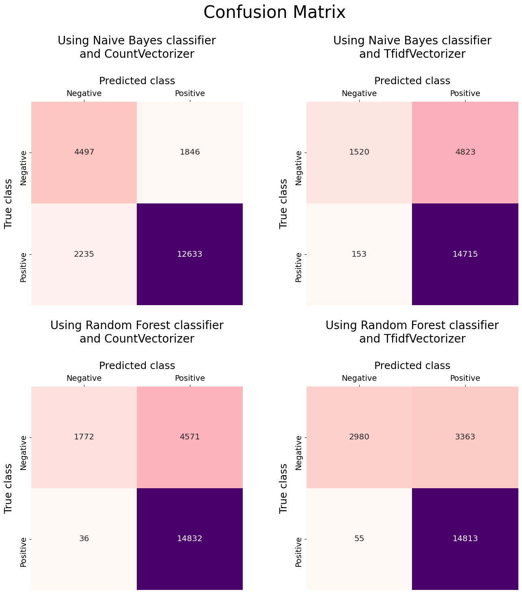
-
Confusion matrices suggest that
MultinomialNB()shows a better classification performance when combind withCountVectorizer()compared to when it's combined withTfidfVectorizer(). In this regard,RandomForestClassifier()is in sharp contrast toMultinomialNB()and it performs better when usingTfidfVectorizer(). -
Among the model+vectorizer combinations,
MultinomialNB() + CountVectorizer()does the best job in correctly identifying the negative reviews. However, this comes at the cost of poorer performance in identifying positive reviews with a significantly higher false negatives and lower true positives. -
Predictions using
RandomForestClassifier()appear to be suffering from overfitting. This is easy to notice when looking at the $\approx$11% difference in performance between the train and test data. This can be remedied by reducing the complexity of theRandomForestClassifier(), for instance, by reducing themax_depth.
Influence of n-grams on the performance of ML classifiers
In this part, we are interested to see if training the ML models using n-grams ($n\geq2$) leads to improvement in their performance.
estimators = []
for i in range(2,6):
estimators.append(Pipeline([('CountVectorizer', CountVectorizer(ngram_range=(i,i),
max_features=10000)),
('Naive Bayes classifier', MultinomialNB())
]
)
)
# fit
preds = []
for i,estimator in enumerate(estimators):
now = time()
#estimator.fit(X_train, y_train)
preds.append(estimator.predict(X_test))
print("took {:.2f} seconds {} using {:d}-grams".format(time()-now,
estimator.get_params()['steps'][1][0],
i+2)
)
print(f"train accuracy: {estimator.score(X_train, y_train)*100:.2f}%")
print(f"test accuracy: {estimator.score(X_test, y_test)*100:.2f}%")took 21.79 seconds Naive Bayes classifier using 2-grams train accuracy: 82.80% test accuracy: 82.17% took 39.43 seconds Naive Bayes classifier using 3-grams train accuracy: 81.30% test accuracy: 80.55% took 53.77 seconds Naive Bayes classifier using 4-grams train accuracy: 78.54% test accuracy: 77.73% took 60.52 seconds Naive Bayes classifier using 5-grams train accuracy: 76.02% test accuracy: 74.72%
The following table shows the summary of performances of the two ML models using n-grams.
Naive Bayes |
Random Forest |
|||||||
|---|---|---|---|---|---|---|---|---|
| vectorizer | CountVectorizer |
TfidfVectorizer |
CountVectorizer |
TfidfVectorizer |
||||
| data | train | test | train | test | train | test | train | test |
| 1-gram | 82.26 | 80.76 | 77.40 | 76.54 | 88.04 | 78.28 | 95.18 | 83.89 |
| 2-gram | 82.80 | 82.17 | 82.41 | 82.17 | 97.01 | 89.84 | 99.02 | 92.79 |
| 3-gram | 81.30 | 80.55 | 81.54 | 80.83 | 92.87 | 86.21 | 95.15 | 88.27 |
| 4-gram | 78.54 | 77.73 | 79.14 | 77.97 | train acc | 80.04 | 87.92 | 81.99 |
| 5-gram | 76.02 | 74.72 | 76.51 | 74.90 | train acc | 75.80 | 81.60 | 77.22 |
Deep learning models for sentiment analysis
In this section we develop deep learning models for sentiment analysis. In the Model Selection process, I explore different neural network architectures for sentiment analysis. Model selection is the process of fitting multiple models on a given dataset and choosing one over all others. I start with the baseline model which uses CountVectorizer as the encoding method which is piped into a simlple neural network. This model is the baseline model. I used tensorflow to design the neural networks in this project.
Sentiment analysis using CountVectorizer and a simple NN
First, we split the data into train, validation, and test data and then, transform the review data into a numerical representation usingCountVectorizer. We also save the transformed features using pickle and bz2 because the transformation can take some time. This way we can use them again later as we develop the sentiment analysis models.
# split the feature-engineered data to train and test
X_train, X_test, y_train, y_test = train_test_split(df_all.review,
df_all.rating_binary,
test_size=0.1,
random_state=110,
stratify = df_all.rating_binary
)
# further split train to tr and validation
X_tr, X_val, y_tr, y_val = train_test_split(X_train,
y_train,
test_size=0.2,
random_state=110,
stratify = y_train
)
vectorizer = CountVectorizer(analyzer = 'word',
tokenizer = None,
preprocessor = None,
stop_words = None,
max_features = 10000
)
# transform
vectorizer.fit(X_train)
vectorized_features_train = vectorizer.transform(X_train)
vectorized_features_tr = vectorizer.transform(X_tr)
vectorized_features_val = vectorizer.transform(X_val)
vectorized_features_test = vectorizer.transform(X_test)
# save the vectorized features
with bz2.open('CountVect_10000_train.pkl.bz2', 'wb') as f:
pickle.dump(vectorized_features_train, f)
f.close()
with bz2.open('CountVect_10000_tr.pkl.bz2', 'wb') as f:
pickle.dump(vectorized_features_tr, f)
f.close()
with bz2.open('CountVect_10000_val.pkl.bz2', 'wb') as f:
pickle.dump(vectorized_features_val, f)
f.close()
with bz2.open('CountVect_10000_test.pkl.bz2', 'wb') as f:
pickle.dump(vectorized_features_test, f)
f.close()
# to load:
# with bz2.open('file.pkl.bz2', 'rb') as f:
# vectorized_features = pickle.load(f)
# f.close()
Next, we build the neural network. I used SGD() as the optimizer with lr=0.005.
opt = SGD(lr=0.005)
# Build the model
model = Sequential(name='baseline')
model.add(Dense(400, input_shape=(10000,)))# hidden layer 1
model.add(Activation('relu'))
model.add(Dense(100, activation='relu'))# hidden layer 2
model.add(Dense(units=1, activation='sigmoid'))# output layer
model.compile(loss='binary_crossentropy', optimizer=opt, metrics=['accuracy'])
model.summary()Model: "baseline" _________________________________________________________________ Layer (type) Output Shape Param # ================================================================= dense (Dense) (None, 400) 4000400 _________________________________________________________________ activation (Activation) (None, 400) 0 _________________________________________________________________ dense_1 (Dense) (None, 100) 40100 _________________________________________________________________ dense_2 (Dense) (None, 1) 101 ================================================================= Total params: 4,040,601 Trainable params: 4,040,601 Non-trainable params: 0 _________________________________________________________________
We are redy to train the model! I use a ModelCheckpoint that tracks 'val_loss' and saves the model weights at the iteration with the minimum validation loss. In addition, I used early stopping with validation loss as the stopping criteria to reduce the overfitting. I used 100 epochs with patience=30, i.e., 100 rounds of training where the trianing stops if there's no improvement in validation loss after 30 iterations. Lastly, I define a dictionary to keep track of different model configurations and keeping track of their performances.
model_config = model.get_config()
checkpoint = ModelCheckpoint(filepath=f"{model_config['name']}.h5", monitor='val_loss', mode='min', verbose=1,
save_best_only=True)
es = EarlyStopping(monitor='val_loss', mode='min', verbose=1, patience=30)
callbacks_list = [checkpoint, es]
# fit model
history = model.fit(vectorized_features_tr.toarray(), y_tr, epochs=100,
batch_size=64, callbacks=callbacks_list,
shuffle=False, validation_data=(vectorized_features_val.toarray(), y_val))
# update the model_dict
model_config['hist']=history.history
model_dict = {}
model_dict[model_config['name']]=model_config
f = open(f"model_dict.pkl", "wb")
pickle.dump(model_dict, f)
f.close()Epoch 1/100 2387/2387 [==============================] - ETA: 0s - loss: 0.5460 - accuracy: 0.7283 Epoch 00001: val_loss improved from inf to 0.48128, saving model to baseline.h5 2387/2387 [==============================] - 14s 6ms/step - loss: 0.5460 - accuracy: 0.7283 - val_loss: 0.4813 - val_accuracy: 0.7653 ... ... ... Epoch 64/100 2386/2387 [============================>.] - ETA: 0s - loss: 0.0063 - accuracy: 0.9995 Epoch 00064: val_loss did not improve from 0.27788 2387/2387 [==============================] - 14s 6ms/step - loss: 0.0063 - accuracy: 0.9995 - val_loss: 0.3521 - val_accuracy: 0.9279 Epoch 00064: early stopping
Even though the validation accuracy is reasonable, there's a relatively large gap between the train and validation performances which is due to overfitting. In the next part, I'll go through my attempts to reduce overfitting by adding BatchNormalization() and/or Dropout() layers to the network architecture.
Modifications to the baseline model
Table 8 shows a summary of the modifications that I made to the baseline model in attempt to improve the model performance. All the models in the table used SGD() optimizer with lr=0.005.
| Layers | Baseline | model_00 | model_01 | model_02 | model_03 |
|---|---|---|---|---|---|
Dense(400, input_shape=(10000,))
| ✔ | ✔ | ✔ | ✔ | ✔ |
BatchNormalization()
| ✗ | ✔ | ✗ | ✔ | ✔ |
Activation('relu')
| ✔ | ✔ | ✔ | ✔ | ✔ |
Dropout
| ✗ | ✗ | ✔(=0.5) | ✔(=0.5) | ✔(=0.8) |
Dense(100, activation='relu')
| ✔ | ✔ | ✔ | ✔ | ✔ |
Dense(units=1, activation='sigmoid')
| ✔ | ✔ | ✔ | ✔ | ✔ |
We first load the models and make predictions for both training and validation data.
model_names = ['baseline', 'model_00', 'model_01', 'model_02', 'model_03']
preds = []
for name in model_names:
model = load_model(f"{name}.h5")
preds.append(model.predict(vectorized_features_tr.toarray()))
preds.append(model.predict(vectorized_features_val.toarray()))
Next, we use accuracy and loss plots along with confusion_matrix to assess the performance of each model.
# helper function
def col_to_hex(colmap, n=10, alpha=1):
"""named colormap to n hex colors"""
out = []
for i in range(n):
r,g,b,_ = plt.cm.get_cmap(colmap,n)(i)
out.append(f"#{int(r*255):02x}{int(g*255):02x}{int(b*255):02x}{int(alpha*255):02x}")
return out
# figure, axes, and adjustments
sns.set(rc={'axes.facecolor':'silver', 'figure.facecolor':'gainsboro', 'legend.facecolor':'white'})
fig = plt.figure(figsize=(9, 25), dpi=120)
plt.subplots_adjust(left=0, bottom=0, right=1, top=1, wspace=0.3, hspace=0.75)
# Accuracy and Loss curves
gs = gridspec.GridSpec(7, 1, height_ratios=[2,2,1,1,1,1,1]) # because matplotlib is weird
ax0 = plt.subplot(gs[0]) # accuracy
ax1 = plt.subplot(gs[1]) # loss
axes=[ax0, ax1]
# labels, constants etc.
colors = col_to_hex('Dark2', n=8)
mfc = ['deepskyblue', 'orange']
titles = ['Accuracy', 'Loss']
data_label_dict = dict(zip(['loss', 'accuracy', 'val_loss', 'val_accuracy'],
['tr loss', 'tr acc', 'val loss', 'val acc']))
patience = 30
n_epochs = 100
history_results = []
for i,model_name in enumerate(model_names):
model_data_dict = model_dict[model_name]
hist = model_data_dict['hist']
for j,key in enumerate(hist.keys()):
n_epochs = len(hist[key])
start = (n_epochs+1)%2 # to reduce the number of data points displayed
if key.endswith('y'): # accuracy
ax_index=0
else: # loss
ax_index=1
data_index=j//2 # 0:train, 1:val
axes[ax_index].plot(np.arange(1, n_epochs+1)[start::2], hist[key][start::2], marker='o',
markerfacecolor=mfc[data_index], markersize=6, color=colors[i],
markeredgewidth=0, markeredgecolor=colors[i], linewidth=5, linestyle='-',
label = f'{data_label_dict[key]} ({model_names[i]})')
if key.startswith('val'): # show min val loss and the corresponding val accuracy
axes[ax_index].plot(n_epochs-patience, hist[key][-patience-1], color='cyan',
marker='x', markersize=6, markeredgewidth=3, zorder=200)
history_results.append(hist['accuracy'][-patience-1])
history_results.append(hist['val_accuracy'][-patience-1])
print()
for i,ax in enumerate(axes):
ax.set_title(titles[i], fontsize=28, y=1.02)
ax.set_xlabel('epochs', fontsize=22, labelpad=10)
ax.legend(bbox_to_anchor=(1,1.02,0,0), loc='upper left', fontsize=14)
ax.grid(False)
plt.setp(ax.get_xticklabels(), fontsize=16)
plt.setp(ax.get_yticklabels(), fontsize=16)
# Confusion Matrix plot
gs = gridspec.GridSpec(7, 3)
conf_mat_ax_ids = np.reshape(np.arange(9,21).reshape(4,-1), 12, order='F')
conf_mat_ax = [plt.subplot(gs[i]) for i in conf_mat_ax_ids]
# labels, constants etc.
labels = ["Negative", "Positive"]
data_labels = ['tr', 'val']
trues = [y_tr, y_val]
cbars = [False]*2*len(model_names)
cbars[-1]=True # one colorbar for all the plots
ylabels = [False]*2*len(model_names)
ylabels[0], ylabels[1] = True, True
y_ticklabel_visibility = [True, False]
for i,ax in enumerate(conf_mat_ax):
pred = np.round(preds[i].ravel()) # probabilities to binary
print(f"{model_names[i//2]} {data_labels[i%2]} acc: from model history={history_results[i]:.3f} - " \
+ f"from model eval={np.mean(pred==trues[i%2]):.3f}")
conf_mat = confusion_matrix(trues[i%2].values, pred, normalize='true')
if i>7: # new colorbar axis otherwise the confusion matrix plot will shrink!
ax_pos = ax.get_position().bounds
cbar_ax = fig.add_axes([(ax_pos[0]+ax_pos[2])*1.05, ax_pos[1], .02, ax_pos[3]])
sns.heatmap(conf_mat, xticklabels=labels,
yticklabels=labels, cmap="YlGnBu",
annot=True, annot_kws={'fontsize':'x-large'},
fmt=".3f", ax=ax, cbar_ax=cbar_ax, vmax=1, vmin=0)
cbar = ax.collections[0].colorbar
cbar.set_ticks(np.linspace(0,1,11))
cbar.set_ticklabels([f'{x:.2f}' for x in np.linspace(0,1,11)])
else:
sns.heatmap(conf_mat, xticklabels=labels,
yticklabels=labels, cmap="YlGnBu",
annot=True, annot_kws={'fontsize':'x-large'},
fmt=".3f", ax=ax, cbar=False)
ax.set_title(f'{model_names[i//2]} ({data_labels[i%2]})', fontsize=20, y=1.35)
ax.xaxis.set_label_position('top')
ax.xaxis.tick_top()
ax.yaxis.set_label_position('left')
ax.yaxis.tick_left()
plt.setp(ax.get_xticklabels(), fontsize=14, rotation=0, ha='center')
plt.setp(ax.get_yticklabels(), fontsize=14, rotation=90, va='center')
ax.set_xlabel('Predicted class', fontsize=18, labelpad=12)
if ylabels[i]:
ax.set_ylabel('True class', fontsize=18, labelpad=10)baseline tr acc: from model history=0.988 - from model eval=0.985 baseline val acc: from model history=0.910 - from model eval=0.910 model_00 tr acc: from model history=0.895 - from model eval=0.895 model_00 val acc: from model history=0.852 - from model eval=0.852 model_01 tr acc: from model history=0.963 - from model eval=0.990 model_01 val acc: from model history=0.922 - from model eval=0.922 model_02 tr acc: from model history=0.954 - from model eval=0.981 model_02 val acc: from model history=0.911 - from model eval=0.911 model_03 tr acc: from model history=0.955 - from model eval=0.897 model_03 val acc: from model history=0.917 - from model eval=0.862
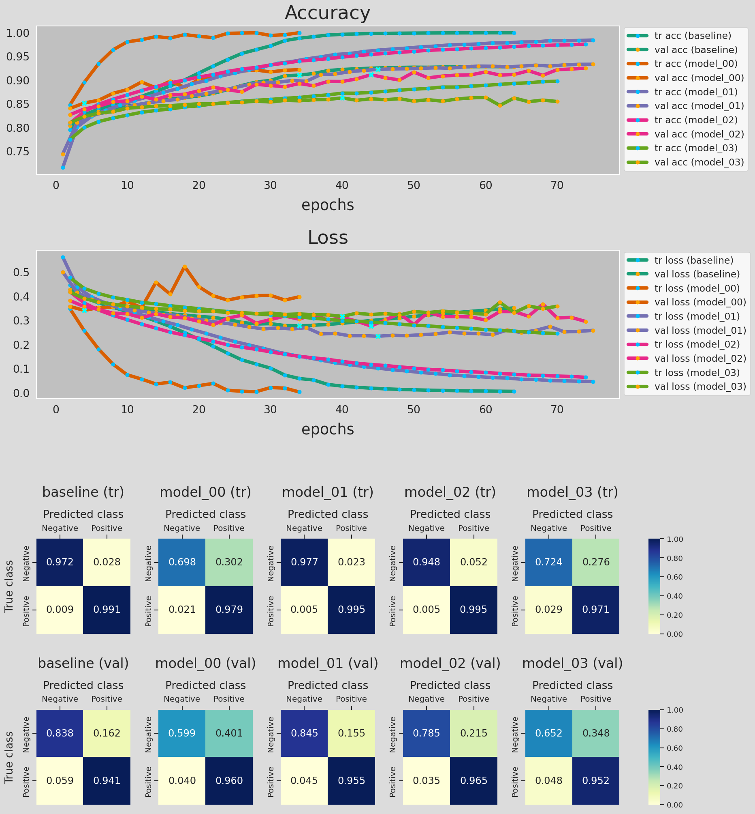
Figure 17 shows the accuracy and loss curves for the training and validation data, along with the confusion matrix of the predictions made by the models listed in Table 8. A lot of information to digest so let's go ahead and seeif we can gain any insights from Figure 17 to improve our classifier!
- We used the model training history data from
model_dict, the dictionary we created earlier, to plot the accuracy and loss curves. - For each curve, × shows the epoch with the minimum loss. Model training stops 30 epochs after this epoch (
patience=30). - Some of the accuracy and loss curves might be a bit misleading/inaccurate for the following reasons:
Notice that I printed out the accuracy of the optimal network (the network with the weights saved at the minimum loss epoch) for training and validation data. For each metric there are two printed values: The first number is obtained from the model history during trainig phase and the second is calculated during evaluation. We can see that the validation accuracy is the same for all of the model. However, in some of these neural networks, the model accuracy for trainig data from model history is higher than that of the evaluation, i.e., inference. To provide more details, I re-ran the model_02 calculations while saving the model at every epoch, so that I can evaluate the model in inference mode. Figure 18 shows the results.
checkpoint = ModelCheckpoint(filepath='model_02_all.{epoch:02d}.h5', monitor='val_loss', mode='min', verbose=1, save_best_only=False, save_weights_only=False,save_freq='epoch') es = EarlyStopping(monitor='val_loss', mode='min', verbose=1, patience=30) callbacks_list = [checkpoint, es] history = model.fit(vectorized_features_tr.toarray(), y_tr, epochs=100, batch_size=64, callbacks=callbacks_list, shuffle=False, validation_data=(vectorized_features_val.toarray(), y_val))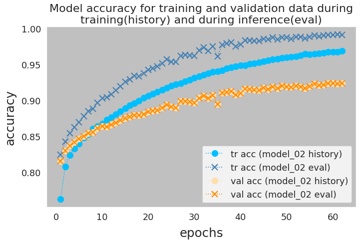
Noteably, this is the case for the models that have
Dropoutlayer in their architecture. The question is what causes this discrepancy?Here is the official
Kerasanswer to this question. In short, during the training phase and depending on the dropout value, a portion of neurons are dropped, in attempt to a reduce overfitting. The accuracy and loss for training data is calculated without taking the weights of the dropped neurons into account. In contrast, during the model evaluation/prediction (inference) all neurons remain in the network structure. The accuracy and loss for validation data, whether in training or evaluation phase, are calculated using the full network. That is why we don't see any difference in the printed values for the validation data. There are other reasons that can contribute to this behavior which is outside the scope of this project (See here and here). - When comparing the performance of the network on training and validation data, we notice that the inaccuracies in predicting negative reviews contributes the most to the poorer performance of the model on validation data. Looking at the confusion matrix, in any case, the model seems to be doing a great job in identifying the positive reviews.
Kerasoffers theclass_weightargument in thefit()method which can be used to treat the two classes differently when calculating the loss function. This is something that I explored and I'll present the outcomes later in the project.
# load the histories
with open('model_baseline_history.pkl', 'rb') as pickle_file:
hist_baseline = pickle.load(pickle_file)
pickle_file.close()
with open('model_00_history.pkl', 'rb') as pickle_file:
hist_model_00 = pickle.load(pickle_file)
pickle_file.close()
Adding a dropout layer
- vectorizers
CountVectorizerTfidfVectorizerTokenizer
- NN architectures
ANNCNNGlove